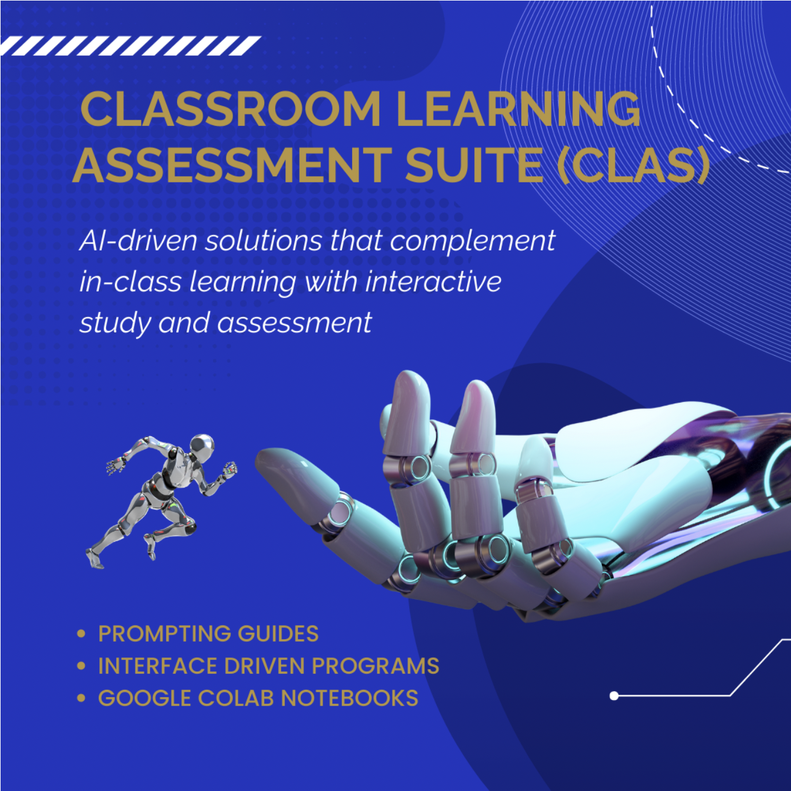

tecrübe
Sınıf Öğrenme ve Değerlendirme Süiti (CLAS) Projesi
Yazılım Mühendisi | Eylül 2023 - Günümüz
- Sınıf içi öğrenme ve değerlendirmeleri otomatikleştirmeyi ve hızlandırmayı amaçlayan bir AI destekli platform oluşturuldu.
- HuggingFace'in doğal dil işleme kütüphaneleri ile OpenAI'nin GPT-3 ve GPT-4'ünü kullanarak etkileşimli öğrenme değerlendirmeleri geliştiren ve notlandırmayı otomatikleştiren bir AI öğrenimasistanı entegre edildi.
- Notlandırma sistemi ve öğrenme yönetim sistemi gibi sistemin çeşitli bileşenlerini Web uygulamasına entegre etmek için API'ler uygulandı.

Open Ended Learning Environments Lab
Makine Öğrenmesi Araştırmacısı | Mayıs 2023 - Günümüz
- Öğrencilerin ortak çalışanlarla etkileşimde bulunurken öğrenme davranışlarını analiz eden çevrimiçi öğretilebilir bir aracı oluşturmak amacıyla f-1 puanı 0,82 olan eylem tanıma için görsel bir soru yanıtlama (VQA) modeli geliştirildi.
- Hico Det kıyaslama veri kümesindeki 39152 tren görüntüsünde VQA modellerinin performansı optimize edildi.
- Videolardaki toplam 80 olası nesneyi tanımlamak için YOLO gibi nesne algılama modelleri kullanıldı.
- VQA görevlerine yönelik metin sorularını işlemek için NLTK gibi doğal dil işleme kütüphaneleri entegre edildi.
- VQA görevlerini gerçekleştirmek için Hugging Face'in Vilt kütüphanesindeki önceden eğitilmiş modellerden yararlanıldı.

Law Transformers Project
Makine Öğrenmesi Mühendisi | January 2023 - May 2023
- Haystack'ı kullanarak hukuki metin analizi için f-1 puanı 0,79 olan bir soru yanıtlama hattı geliştirildi.
- 180510 yasal vaka belgelerinde arama alanını daraltmak için TF-IDF ve Yoğun Geçiş Erişimi de dahil olmak üzere yoğun ve seyrek vektör alma yöntemlerini kullanan bir alıcı bileşeni uygulandı.
- Doğru ve bağlama duyarlı yanıt çıkarımı için okuyucu bileşenini oluşturmak amacıyla BERT, RoBERTa ve ALBERT gibi transformatör tabanlı modeller kullanıldı.
- Tekrarlanabilirlik için net açıklamalar ve talimatlar sağlayarak uygulama sürecini, deneyleri ve sonuçları Jupyter Not Defterlerinde belgeledi.

technik beceriler
Programlama:
Python, C/C++, Java, JavaScript, HTML, CSS, Git/GithubMakine Öğrenmesi:
PyTorch, TensorFlow, Scikit-learn, NLTK, Transformers, HuggingFace, Haystack, OpenCVSayısal analiz:
NumPy, , Pandas, Seaborn, Matplotlib
ilgili dersler
- Veri Yapıları ve Program Tasarımı
- Ayrık Matematik
- Algoritmaler
- Uygulamalı Makine Öğrenmesi
- Ara Yazılım Tasarımı
- İşletim Sistemleri
liderlik tecrübesi
Sybbure Searle Lisans Araştırma Programı
Araştırma Görevlisi | Mayıs 2023 - Günümüz
- Araştırma bulgularını program içi toplantılarda, haftalık alt grup toplantılarında, seminerlerde ve çalıştaylarda sundu.
- Bilgi akışını geliştirmek, fikir alışverişinde bulunmak ve işbirliğini arttırmak için akran araştırması sunumlarını değerlendirdi ve geri bildirim sağladı.
Öğrenim Asistanı
Üşletim Sistemleri | Eylül 2023 - Günümüz
- Haftalık programlama ödevlerine ve ara sınavlara not verildi ve geri bildirimde bulunuldu.
- Süreç yönetimi, bellek yönetimi ve senkronizasyon gibi kavramların öğrenimini güçlendirmek için Piazza platformu aracılığıyla 2 saatlik ofis saatleri düzenlendi ve öğrenci soruları yanıtlandı.
Prograglama ve Problem Çözme | Ağustos 2022 - Eylül 2023
- Haftalık programlama ödevleri ve ara sınavlar notlandırıldı ve geri bildirimde bulunuldu.
- Nesneye yönelik programlama ve hata ayıklama gibi sınıfta öğrenilen kavramları güçlendirmek için açıklamalar yapıldı.
- Akademik dürüstlüğü korumak için sınavlarda ve finallerde gözetmenlik yapıldı.